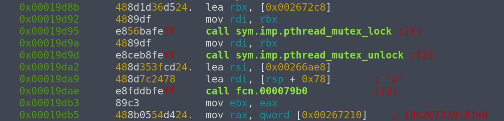
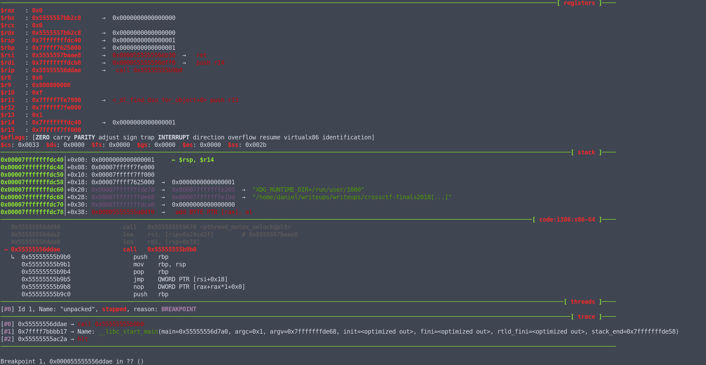
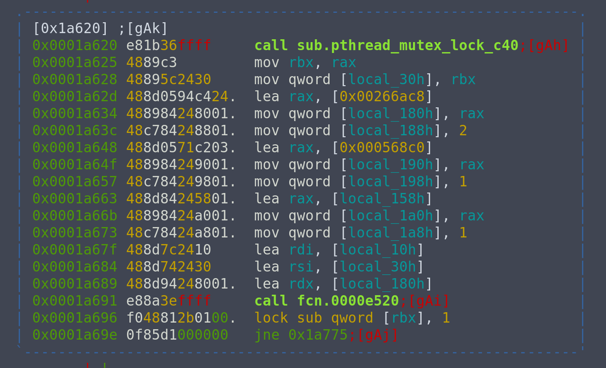

CrossCTF Finals 2018 : Rochefort 8 (re)
Decrypt the encrypted flag!
Creator - quanyang (@quanyang)
The encrypted flag is [193, 43, 110, 37, 49, 203, 177, 168, 213, 56, 111, 114, 136, 234, 91, 129, 74, 3, 134, 159, 134, 47, 53, 245, 103, 247, 251, 52, 198, 245, 208, 139, 188, 151, 208, 36, 109, 245, 48, 174, 123, 154]
Summary
We are given a stripped binary, which name suggests to be a Rust binary. Reversing it, we see that it performs some form of variation of RC4, and we will use it to decrypt our flag.
The steps taken to reverse this binary are:
Analysis
For this challenge, I used r2 as I am more familiar with it compared to IDA. Like usual, start by running file on the binary and executing it to see what it is about.
$ file iamrusty
iamrusty: ELF 64-bit LSB pie executable x86-64, version 1 (SYSV), statically linked, stripped
$ ./iamrusty
[1] 28689 segmentation fault ./iamrusty
We see that it is a statically linked, stripped binary. Weirdly, it crashes.
Anyways, load the binary in analysis mode in r2.
$ r2 -A iamrusty
Then, use afl to check the functions.
[0x0012be40]> afl
0x0012be40 3 50 entry0
0x0012be72 7 62 fcn.0012be72
0x0012beb0 20 164 fcn.0012beb0
0x0012c01c 9 17 -> 124 fcn.0012c01c
0x0012c02d 15 107 -> 228 fcn.0012c02d
0x0012c098 1 34 fcn.0012c098
We see only 6 functions. There are a few possible reasons to this:
- The binary is statically linked and uses very minimal amount of library functions
- The binary is written by hand
- The binary is packed
Looking into entry0, we see

We see some initialization and call fcn.0012beb0. Peeking into it in graph view, we see a rather complicated graph, and non-typical instructions like call r11. This eliminates the possiblity that it is hand-written assembly. It is also unlikely to be the first case, as normally there would be a __libc_start_main function call at the start.
Hence, we should explore the possibility that it is packed. Using strings on the binary, we see UPX! on the first line. Ah, it is a UPX packed binary. We can unpack it to analyse it.
$ upx -d iamrusty -o unpacked
Now, running file again and executing the binary.
$ file unpacked
unpacked: ELF 64-bit LSB pie executable x86-64, version 1 (SYSV), dynamically linked, interpreter /lib64/ld-linux-x86-64.so.2, for GNU/Linux 2.6.24, BuildID[sha1]=6d25298b54bfbbf751f73e6e0833e24961702770, stripped
$ ./unpacked
The encrypted flag is [213, 49, 96, 34, 11, 251, 177, 134, 203, 44, 118, 96, 155, 172]
Now this makes more sense. Let's also run strings on it. Doing so, we see strings like "jemalloc" or strings contaning "rs". So, we can confirm that this is a Rust binary.
Apply zigs
Before starting to analyse the binary, since it is stripped, this means it will be very difficult to know what each function does. I made use of zignatures to try to identify each function. The radare2 book has a more detailed documentation of the zignatures namespace.
I prepared a zignature file which contains the signatures of most commonly used Rust standard library functions.
To do this, don't load the binary in analysis mode, just plain r2 ./unpacked. Then, load the zignature file, apply it to our binary, and only after that use aaa to analyse it.
[0x00006c01]> zo /home/daniel/REsources/zigs/rust/rust.z
[0x00006c01]> z/
[+] searching 0x00000000 - 0x00063794
0x0000cb20 Sequencial hit ignored.
0x0000cb60 Sequencial hit ignored.
0x0000cb20 Sequencial hit ignored.
0x0000cb60 Sequencial hit ignored.
0x0000cb20 Sequencial hit ignored.
0x0000cb60 Sequencial hit ignored.
0x0000cb20 Sequencial hit ignored.
0x0000cb60 Sequencial hit ignored.
0x0000cb20 Sequencial hit ignored.
0x0000cb60 Sequencial hit ignored.
0x00014240 Sequencial hit ignored.
0x00014240 Sequencial hit ignored.
0x00014240 Sequencial hit ignored.
0x00014240 Sequencial hit ignored.
0x00014240 Sequencial hit ignored.
0x00014240 Sequencial hit ignored.
0x00015b00 Sequencial hit ignored.
0x00015b00 Sequencial hit ignored.
0x00017780 Sequencial hit ignored.
0x00017780 Sequencial hit ignored.
0x00017780 Sequencial hit ignored.
0x00017780 Sequencial hit ignored.
0x00017780 Sequencial hit ignored.
[+] searching 0x00263900 - 0x002683b8
[+] searching function metrics
hits: 206
[0x00006c01]> aaa
[x] Analyze all flags starting with sym. and entry0 (aa)
[x] Analyze len bytes of instructions for references (aar)
[ WARNING : block size exceeding max block size at 0x0000d7a0
[+] Try changing it with e anal.bb.maxsize
[x] Analyze function calls (aac)
[x] Use -AA or aaaa to perform additional experimental analysis.
[x] Constructing a function name for fcn.* and sym.func.* functions (aan)
It is not perfect. It will not successfully label every single function in there, but it was really helpful in identifying functions like
sign.bytes.sym.core::fmt::Write::write_fmt::hda0de9044a822dbe_2
sign.bytes.sym.core::fmt::Formatter::pad_integral::__u7b__u7b_closure_u7d__u7d_::h405811ed46957e23_0
which helped a lot in guessing what a function does.
Find main
One major problem with this being a stripped binary means we don't know where main is, and it is not as obvious as typical C binaries.
Typically, for C binaries, the program will enter main after the call of __libc_start_main. However, for Rust, after __libc_start_main, the program does a lot of setting up, before going into the actual main.
And since it is a stripped binary, we won't know which function call is main or for setting up!
Useful pattern
However, I am not completely stuck. From trying to reverse different simple Rust binaries I compiled myself, I noticed a very helpful pattern. It turns out that regardless of whatever or however much set up is being done at the start, before executing the actual main, Rust will execute the following instruction block.
jmp QWORD PTR [rsi + 0x18]
... # a few instructions
call QWORD [rdi]
There will always be a jmp to [rsi + 0x18], and after a few instructions that may differ depending on the binary, it will call QWORD [rdi], bringing us into the real main.
Using backtrace
Now that we have an idea of what to look for, we can further narrow down our search space by making use of the backtrace at the point where the program prints the encrypted flag. This is because the printing must be called inside main, so the address of an instruction that calls main will be inside the backtrace for sure.
For this part, I used GEF. To add a breakpoint when the encrypted is being printed, we can set a catchpoint at a write syscall.
gef➤ catch syscall write
Then use r to start executing the binary, and bt to view the backtrace.
gef➤ bt
#0 0x00007ffff7f7f291 in __libc_write (fd=0x1, buf=0x7ffff761c000, nbytes=0x57) at ../sysdeps/unix/sysv/linux/write.c:27
#1 0x0000555555560e9c in ?? ()
#2 0x0000555555562278 in ?? ()
#3 0x0000555555561568 in ?? ()
#4 0x000055555556a0f6 in ?? ()
#5 0x00005555555625db in ?? ()
#6 0x000055555556e696 in ?? ()
#7 0x000055555556eb43 in ?? ()
#8 0x000055555556ddb3 in ?? ()
#9 0x00007ffff7bbbb17 in __libc_start_main (main=0x55555556d7a0, argc=0x1, argv=0x7fffffffde68, init=<optimized out>, fini=<optimized out>, rtld_fini=<optimized out>, stack_end=0x7fffffffde58) at ../csu/libc-start.c:310
#10 0x000055555555ac2a in ?? ()
No shortcuts here. We can start by looking at the function called after __libc_start_main, which is at #8. Because the addresses here are added with a base address, we can use vmmap to get the base address, which is 0x0000555555554000. Subtracting it from the address at #8, we can inspect it in r2, at address 0x19db3.

We see that before this instruction, call fcn.000079b0 was being executed, so #7 is an address inside fcn.000079b0. Let's try to set a breakpoint at 0x19dae and see if we can find the jmp [rsi+0x18] instruction from here.
Since the binary is a PIE, we can't set the breakpoint at 0x19dae using break *0x19dae, since during execution there will be a base address added to it as seen earlier, and 0x19dae will become an invalid address.
To do this, we can use pie break *0x19dae from gef, and pie run to run it with these settings.

Great! jmp [rsi+0x18] is close to us. Single stepping a few steps, we arrive at call [rdi], which brings us into the actual program main, which is at 0x55555556dff0, without the base address it is 0x19ff0.
Define function in r2
Now we are left with defining 0x19ff0 as a function in r2, and renaming it to actual_main. We can do this by seeking 0x19ff0 using s 0x19ff0, then entering visual mode using V, and pressing df to define function, lastly dr to rename function.
Once we are done with this, we can open up the graph view and actually start to reverse what the binary is doing.
rust-main-break
Since I do not want to do this kind of searching all the time, I wrote a command for gef-extras that automates this process. It will look like something like the following
gef➤ rust-main-break
[+] Breaking at '{<text variable, no debug info>} 0x5570 <__libc_start_main@plt>'
[Thread debugging using libthread_db enabled]
Using host libthread_db library "/lib/x86_64-linux-gnu/libthread_db.so.1".
[+] Searching for 'jmp QWORD PTR [rsi + 0x18]' instructions
[+] Trying 0x55555555b9b5
[Thread debugging using libthread_db enabled]
Using host libthread_db library "/lib/x86_64-linux-gnu/libthread_db.so.1".
0x000055555556eb40 in ?? ()
0x000055555556eb41 in ?? ()
─────────────────────────────────────────────────────────────────────────────────────────────────────────────────────────────────────────────────────────────────────────────────────────────────────────────────[ registers ]────
$rax : 0x0
$rbx : 0x5555557bb2c8 → 0x0000000000000000
$rcx : 0x0
$rdx : 0x5555557bb2c8 → 0x0000000000000000
$rsp : 0x7fffffffdc28 → 0x000055555556eb43 → xor eax, eax
$rbp : 0x7ffff7625000 → 0x0000000000000001
$rsi : 0x5555557baae8 → 0x000055555556eb30 → ret
$rdi : 0x7fffffffdcb8 → 0x000055555556dff0 → push r14
$rip : 0x55555556dff0 → push r14
$r8 : 0x0
$r9 : 0x800000000
$r10 : 0xf
$r11 : 0x7ffff7fe7990 → <_dl_find_dso_for_object+0> push r13
$r12 : 0x7fffff7fe000
$r13 : 0x1
$r14 : 0x7fffffffdc40 → 0x0000000000000001
$r15 : 0x7fffff7ff000
$eflags: [ZERO carry PARITY adjust sign trap INTERRUPT direction overflow resume virtualx86 identification]
$fs: 0x0000 $gs: 0x0000 $es: 0x0000 $ds: 0x0000 $cs: 0x0033 $ss: 0x002b
─────────────────────────────────────────────────────────────────────────────────────────────────────────────────────────────────────────────────────────────────────────────────────────────────────────────────────[ stack ]────
0x00007fffffffdc28│+0x00: 0x000055555556eb43 → xor eax, eax ← $rsp
0x00007fffffffdc30│+0x08: 0x0000000000000000
0x00007fffffffdc38│+0x10: 0x000055555556ddb3 → mov ebx, eax
0x00007fffffffdc40│+0x18: 0x0000000000000001 ← $r14
0x00007fffffffdc48│+0x20: 0x00007fffff7fe000
0x00007fffffffdc50│+0x28: 0x00007fffff7ff000
0x00007fffffffdc58│+0x30: 0x00007ffff7625000 → 0x0000000000000001
0x00007fffffffdc60│+0x38: 0x00007fffffffde78 → 0x00007fffffffe205 → "XDG_RUNTIME_DIR=/run/user/1000"
──────────────────────────────────────────────────────────────────────────────────────────────────────────────────────────────────────────────────────────────────────────────────────────────────────────[ code:i386:x86-64 ]────
0x55555556dfe0 ud2
0x55555556dfe2 nop WORD PTR cs:[rax+rax*1+0x0]
0x55555556dfec nop DWORD PTR [rax+0x0]
→ 0x55555556dff0 push r14
0x55555556dff2 push rbx
0x55555556dff3 sub rsp, 0x298
0x55555556dffa lea rdi, [rsp+0x180]
0x55555556e002 xor ebx, ebx
0x55555556e004 xor esi, esi
───────────────────────────────────────────────────────────────────────────────────────────────────────────────────────────────────────────────────────────────────────────────────────────────────────────────────[ threads ]────
[#0] Id 1, Name: "unpacked", stopped, reason: SINGLE STEP
─────────────────────────────────────────────────────────────────────────────────────────────────────────────────────────────────────────────────────────────────────────────────────────────────────────────────────[ trace ]────
[#0] 0x55555556dff0 → push r14
[#1] 0x55555556eb43 → xor eax, eax
[#2] 0x55555556ddb3 → mov ebx, eax
[#3] 0x7ffff7bbbb17 → Name: __libc_start_main(main=0x55555556d7a0, argc=0x1, argv=0x7fffffffde68, init=<optimized out>, fini=<optimized out>, rtld_fini=<optimized out>, stack_end=0x7fffffffde58)
[#4] 0x55555555ac2a → hlt
──────────────────────────────────────────────────────────────────────────────────────────────────────────────────────────────────────────────────────────────────────────────────────────────────────────────────────────────────
0x000055555556dff0 in ?? ()
[+] Found 'main' at 0x55555556dff0
Reverse encryption
Now that we can analyse main, the next step is to reverse the encryption algorithm. At the start of the function, we see a few blocks of data are being copied to the stack.

Inspecting those values,
:> ps @ 0x545b0
\x01\x02\x03\x04\x05\x06\x07\x08\x09
\x0b\x0c\x0d\x0e\x0f\x10\x11\x12\x13\x14\x15\x16\x17\x18\x19\x1a\x1b\x1c\x1d\x1e\x1f !"#$%&'()*+,-./0123456789:;<=>?@ABCDEFGHIJKLMNOPQRSTUVWXYZ[\]^_`abcdefghijklmnopqrstuvwxyz{|}~\x7f\x80\x81\x82\x83\x84\x85\x86\x87\x88\x89\x8a\x8b\x8c\x8d\x8e\x8f\x90\x91\x92\x93\x94\x95\x96\x97\x98\x99\x9a\x9b\x9c\x9d\x9e\x9f\xa0\xa1\xa2\xa3\xa4\xa5\xa6\xa7\xa8\xa9\xaa\xab\xac\xad\xae\xaf\xb0\xb1\xb2\xb3\xb4\xb5\xb6\xb7\xb8\xb9\xba\xbb\xbc\xbd\xbe\xbf\xc0\xc1\xc2\xc3\xc4\xc5\xc6\xc7\xc8\xc9\xca\xcb\xcc\xcd\xce\xcf\xd0\xd1\xd2\xd3\xd4\xd5\xd6\xd7\xd8\xd9\xda\xdb\xdc\xdd\xde\xdf\xe0\xe1\xe2\xe3\xe4\xe5\xe6\xe7\xe8\xe9\xea\xeb\xec\xed\xee\xef\xf0\xf1\xf2\xf3\xf4\xf5\xf6\xf7\xf8\xf9\xfa\xfb\xfc\xfd\xfe\xff
it looks like the initial permutation of RC4. It's something important to keep in mind, but not to quickly jump to conclusions yet.
(Actually, a hint was given that the encryption method is a variation of RC4)
Output tracing
At this point, what I decided to do, was to try to trace the output of the program, to see what is being done to it, and where did it come from. Again, I made use of the backtrace.
(For reference)
gef➤ bt
#0 0x00007ffff7f7f291 in __libc_write (fd=0x1, buf=0x7ffff761c000, nbytes=0x57) at ../sysdeps/unix/sysv/linux/write.c:27
#1 0x0000555555560e9c in ?? ()
#2 0x0000555555562278 in ?? ()
#3 0x0000555555561568 in ?? ()
#4 0x000055555556a0f6 in ?? ()
#5 0x00005555555625db in ?? ()
#6 0x000055555556e696 in ?? ()
#7 0x000055555556eb43 in ?? ()
#8 0x000055555556ddb3 in ?? ()
#9 0x00007ffff7bbbb17 in __libc_start_main (main=0x55555556d7a0, argc=0x1, argv=0x7fffffffde68, init=<optimized out>, fini=<optimized out>, rtld_fini=<optimized out>, stack_end=0x7fffffffde58) at ../csu/libc-start.c:310
#10 0x000055555555ac2a in ?? ()
This time, we want to find the address of the instruction in actual_main that calls a function that leads to printing the encrypted flag. After some checking, #6 is the one we are looking for.
In particular, call fcn.0000e520 at 0x1a691.

Now, the question is, is fcn.0000e520 a printing function, or a function that further encrypts the flag then calls a printing function? To do this, we can inspect the registers and stack to see if we can find traces of the final encrypted flag. Let's set a breakpoint at 0x1a691 to inspect the stack before fcn.0000e520 is called.
Looking at the registers, we see some optimistic results. In particular, rdx contains an address that leads to the string "The encrypted flag is".
$rax : 0x7fffffffdad8 → 0x00007fffffffdae8 → 0x00007ffff762a000 → 0x86b1fb0b226031d5
$rbx : 0x7ffff7625050 → 0x0000000000000002
$rcx : 0x0
$rdx : 0x7fffffffdb00 → 0x00005555557baac8 → 0x00005555555aa900 → "The encrypted flag is \n/proc/curproc/file"
$rsp : 0x7fffffffd980 → "6999 557bc000 rw-p 00"
$rbp : 0x7ffff7625000 → 0x0000000000000001
$rsi : 0x7fffffffd9b0 → 0x00007ffff7625050 → 0x0000000000000002
$rdi : 0x7fffffffd990 → "557bc000 rw-p 00"
$rip : 0x55555556e691 → call 0x555555562520
$r8 : 0x0
$r9 : 0x61
$r10 : 0x310
$r11 : 0xcc
$r12 : 0x7fffff7fe000
$r13 : 0x1
$r14 : 0x7fffffffdc40 → 0x0000000000000001
$r15 : 0x7fffff7ff000
$eflags: [zero carry PARITY adjust sign trap INTERRUPT direction overflow resume virtualx86 identification]
$fs: 0x0000 $gs: 0x0000 $es: 0x0000 $ds: 0x0000 $cs: 0x0033 $ss: 0x002b
It seems like the address contained in rdx may contain our encrypted flag. Using telescope from gef, we can easily inspect the contents in the address contained by rdx.
gef➤ telescope $rdx
0x00007fffffffdb00│+0x00: 0x00005555557baac8 → 0x00005555555aa900 → "The encrypted flag is \n/proc/curproc/file" ← $rdx
0x00007fffffffdb08│+0x08: 0x0000000000000002
0x00007fffffffdb10│+0x10: 0x00005555555aa8c0 → add DWORD PTR [rax], eax
0x00007fffffffdb18│+0x18: 0x0000000000000001
0x00007fffffffdb20│+0x20: 0x00007fffffffdad8 → 0x00007fffffffdae8 → 0x00007ffff762a000 → 0x86b1fb0b226031d5
0x00007fffffffdb28│+0x28: 0x0000000000000001
0x00007fffffffdb30│+0x30: 0x8754a2a1c8a40fb0
0x00007fffffffdb38│+0x38: 0x573deb40f0ec6a78
0x00007fffffffdb40│+0x40: 0x05bb44d0048dce4d
0x00007fffffffdb48│+0x48: 0xc9343efffc4b7fed
We see some numbers at $rdx + 0x30. Let's check the decimal values of some bytes in there.
gef➤ x/10db $rdx+0x30
0x7fffffffdb30: -80 15 -92 -56 -95 -94 84 -121
0x7fffffffdb38: 120 106
gef➤ x/10ub $rdx+0x30
0x7fffffffdb30: 176 15 164 200 161 162 84 135
0x7fffffffdb38: 120 106
Our program output is
$ ./unpacked
The encrypted flag is [213, 49, 96, 34, 11, 251, 177, 134, 203, 44, 118, 96, 155, 172]
Sadly, those numbers do not match our program output. However, making some observations, we see that there is another set of possible numbers contained in the address at $rdx + 0x20.
gef➤ x/10ub 0x00007ffff762a000
0x7ffff762a000: 213 49 96 34 11 251 177 134
0x7ffff762a008: 203 44
It matches! Our encrypted flag is contained in 0x00007ffff762a000!
Identify relevant code blocks
We are very close! Now, we can follow on by checking which part of the code affects this block of memory, then from there reverse the encryption algorithm.
Typically in Rust binaries, there are a lot of functions that call pthread functions within them. Normally, we can ignore these functions as they are just used by Rust for things like safety checking or error handling.
There are several ways we can identify the code blocks that are relevant. We can instrument the binary to stop when the contents in that memory block matches the encrypted flag. This can be done using tools like angr or GDB scripting. I chose to just manually set some breakpoints and check by hand.
Doing so, I managed to identify that the blocks that matter in the CFG are


If we look at the Wikipedia entry of RC4, the first block prepares the initial permutation. The second block is the KSA (Key scheduling algorithm). The third block performs some form of malloc-like operation that returns the address of the block containing our encrypted flag. The final block is the PRGA (pseudo-random generation algorithm) part.
Looking at the PRGA block, we see occurences of xor instructions. This should be the flag, being encrypted by the output of the PRGA. If we piece them together, we get the string WhatIsTheFlag?.
Conclusion
We are done with reversing. This binary shows us the encryption method used to encrypt the string WhatIsTheFlag?. Now we need to decrypt the actual flag given
[193, 43, 110, 37, 49, 203, 177, 168, 213, 56, 111, 114, 136, 234, 91, 129, 74, 3, 134, 159, 134, 47, 53, 245, 103, 247, 251, 52, 198, 245, 208, 139, 188, 151, 208, 36, 109, 245, 48, 174, 123, 154]
To sum up, the encryption algorithm is based on RC4,
- Sets up an initial permutation
- Swaps values in the initial permutation around for 256 iterations (Key scheduling)
- For each character in the flag, obtain a corresponding key byte after swapping some values in the permutation again (Pseudo-random generation), then xors it with the flag to produce the ciphertext
Solution
Now, we are left with writing a script to generate the keystream based on the one given in the binary, in order to decrypt the actual flag.
Since the key scheduling part (block 2) is just setting up the permutation for the random number generation, we can let the program execute until that is done, then dump the memory containing the permutation to a file.
Looking at the disassembly, we see that the key schedule is being stored in rsp + 0x182. So, we can just set a breakpoint at the start of block 3 (i.e. when block 2 finishes), and then dump the contents in that memory block to a file.
gef➤ pie break *0x1a187
gef➤ pie run
gef➤ dump memory key_schedule $rsp+0x182 $rsp+0x182+256
Then, we got to write a function to emulate the PRGA part. This part is just purely reversing the disassembly, nothing special.
key_index = 0
key_index2 = 0
key_schedule = map(ord, list(open('key_schedule', 'r').read()))
def get_key():
global key_index, key_index2, key_schedule
key_index = (key_index + 1) % 256
key_index2 = (key_index2 + key_schedule[key_index]) % 256
key_schedule[key_index2], key_schedule[key_index] = key_schedule[key_index], key_schedule[key_index2]
return key_schedule[(key_schedule[key_index] + key_schedule[key_index2]) % 256]
And lastly, print the flag.
if __name__ == '__main__':
c = [193, 43, 110, 37, 49, 203, 177, 168, 213, 56, 111, 114, 136, 234, 91, 129, 74, 3, 134, 159, 134, 47, 53, 245, 103, 247, 251, 52, 198, 245, 208, 139, 188, 151, 208, 36, 109, 245, 48, 174, 123, 154]
flag = ''
for i in xrange(len(c)):
flag += chr(c[i] ^ get_key())
print flag